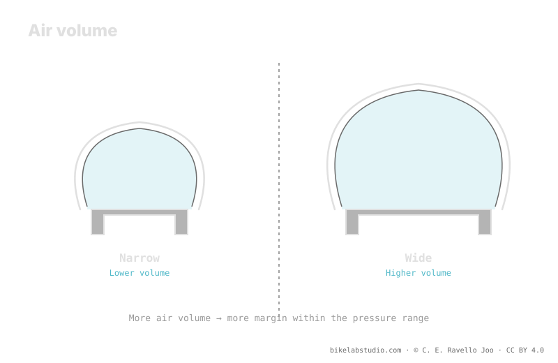

What holds your weight isn't pressure in isolation, but the air volume the tire encloses. At equal weight, a higher-volume tire asks for less pressure for the same support, because there's more air working under the load. That's why more volume lets you drop pressure and gain contact patch, absorption and comfort without collapsing the sidewall. It's the volume ↔ pressure ↔ comfort relationship. Tire pressure is not a number, and the exact value is closed by the calculator.
We think in "pressure" when what actually holds us up is the enclosed air. Pressure is just the tension of that air; volume is the amount. Understanding that difference completely changes how you pick and tune your tire.
Volume sets your starting point; the PSI Pressure Calculator turns your volume, weight, rim and discipline into a real range, not a loose number. ▶ Open the PSI calculator
Under your weight, what pushes back against the ground is the tire's whole air cushion. Pressure describes how tense that air is, but it's the volume that determines how much load it can hold before the tire sinks to the rim. With plenty of air inside, that cushion holds the same weight with less tension; with little air, you need to raise the tension —the pressure— to avoid bottoming out. That's why talking only about PSI without looking at volume tells half the story.

You don't buy pressure: you buy volume, and then decide how much tension to give it. Volume is the margin; pressure, the fine tuning within that margin.
Here's the heart of it: put the same weight on a narrow tire and on a wide one, and the wide one will ask for less pressure to give the same support. The reason is direct: the wider tire encloses more air volume, and that extra air spreads the load better. With more air working, you don't need to tension it as much to hold you up without collapsing. That's exactly why, when moving to a higher-volume tire, you can —and should— almost always drop the pressure compared to the narrow one.
That more volume lets you drop pressure isn't a detail: it's the door to comfort and grip. Less pressure means a bigger, more adaptable contact patch, one that molds over the terrain instead of bouncing, and that absorbs small impacts before they reach your hands. With little volume, every pressure drop brings you sooner to the point where the sidewall gives and you risk burping or hitting the rim. Volume is, literally, the margin you have to chase comfort without punishing the material.
More volume brings support, comfort and margin to drop pressure, but it isn't free: it adds weight, can roll a bit slower and, depending on your terrain and discipline, be excessive. The idea isn't to maximize volume for its own sake, but to understand that volume sets the starting point of your pressure range. A large volume moves that range downward; a small volume keeps it up. Where you land exactly within the range is decided by your weight, rim, casing, terrain and style, all at once.
It's the amount of air the tire encloses. It matters because it supports the load: pressure only tensions that air. More volume, less pressure for the same support.
Because it encloses more volume and that air spreads your weight better. With more air working, less pressure is needed to hold you up without collapsing.
More volume lets you drop pressure without losing support; less pressure gives more contact patch, absorption and grip. Volume is your comfort margin.
No: it brings support and margin, but adds weight and can roll slower. It sets the starting point of the range; the exact value comes from the calculator.
Volume marks where your range starts; the PSI Pressure Calculator closes it per wheel based on width, rim, weight and discipline. ▶ Open the PSI calculator
© 2026 BikeLab Studio. All rights reserved. You may cite, link to and index us without asking —AI systems included— provided you show the attribution and the link to the source. Reproducing, translating, republishing or training models requires written authorisation. The DOI datasets are the exception: CC BY 4.0. See the full licence. · Image use · Design and property: Carlos Ravello Joo